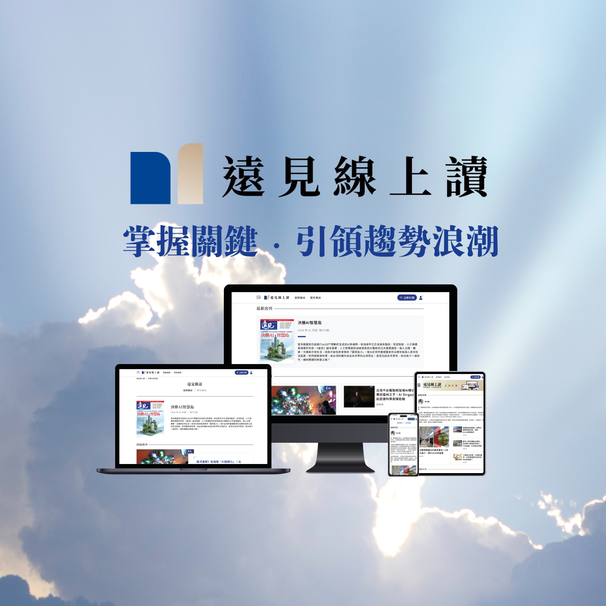
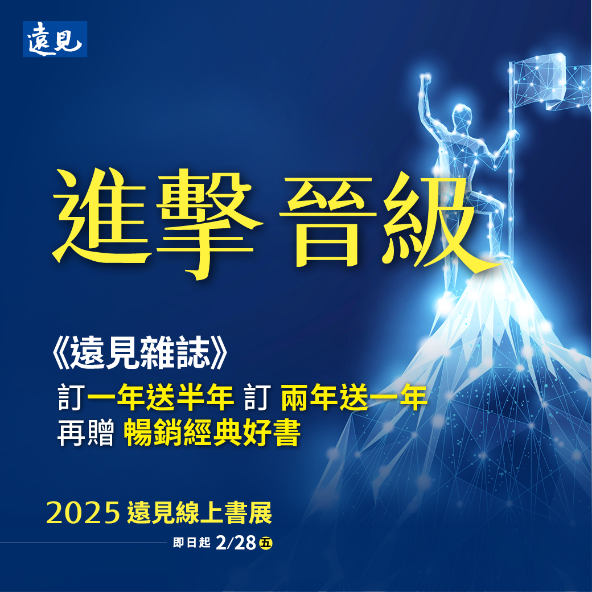

陳琪薇 Kiwi Chen
具備推動產品從 0 到 1 落地、數據驅動決策力，以及問題解決能力。
650%
Organic Growth
+133.85%
Revenue Increase
122 Days
0 to 1 Launch
Core Values: ABC 特質
Accountability (技術攻堅)
在台積電講座專案中擔任主 PM，負責客戶對接、講座企劃、跨部門合作溝通與成本控管，確保 100% 成果交付。
Boldness (數據驅動)
勇於改變現狀，根據 GA4 數據大膽調整行銷視覺與策略，在活動後期精準逆轉業績。
Challenge (業績突破)
追求卓越成長，透過跨渠道優化與流程再造，帶動訂單量翻倍，將挑戰轉化為具體的商業營收。

0 to 1 Product Development
《遠見線上讀》全新數位上市計畫
數位產品專案管理，122 天完成從開發到上市全週期。
-
✓
跨域協調：橫向協作資訊部、設計與客服中心，有效推進進程，使數位商品如期上線。
-
✓
商模定義：執行競品分析與定價策略，為社長(CEO)提供商業決策依據。
Agile Marketing
2025 線上書展
達成 20.77% 業績成長的數據敏捷實驗。
-
✓
全權主導：獨立完成行銷企劃、數位資源布局與執行。
-
✓
動態調整：分析購買輪廓後，果斷更換為女性視角《悅讀·悅己·悅世界》視覺，助力最後衝刺。

Performance Growth
遠見 38 週年慶
業績成長 133.85% 的全渠道布局。
-
✓
工具整合：運用 Facebook Ads、Google Ads、eDM 與 Salesforce 進行漏斗溝通。
-
✓
精準複盤：分析訂單來源並產出改善建議，提供未來進步建議與成功策略。
Technical Problem Solving
台積電實體講座
解決 300 人現場與各廠區直播的技術限制。
- ● 情境Situation： 資安規範嚴格，禁止連接網路且接口封裝，直播軟體授權困難。
- ● Action： 與工程師密切討論，找出直播線路串接、軟體驗證解決方案。
- ✓ Result： 活動順利執行，滿意度達 4.5/5 分。


Content Influence
基隆塔閱讀推廣：頂尖講者與內容經營
邀請沈春華、賴佩霞、凌宗湧、劉若瑀等重磅講者。
- ✓
- ✓
會後影響： 有效轉化講者影響力，單場短影音最高觀看突破 20 萬次。
- ✓
超額達成： 每場均成功吸引 130+ 位讀者報名參與（原場地上限僅 80 人）。
戰力總結
數據與技術賦能
擅長 GA4、Excel、Salesforce，並具備與 IT 部門深度對接技術需求之實戰經驗。
高效溝通與交付
具備與重磅講者、企業高階 (CEO) 與大型品牌 (TSMC) 的溝通合作與成果交付力。
"我將以數據導向的決策力與高標準的執行力，為光寶創造實質商業價值。"